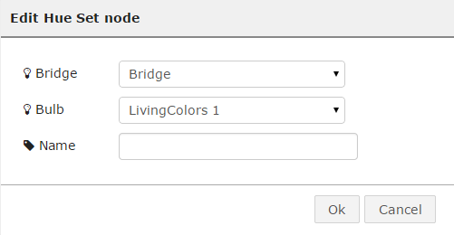

Control Hue bulbs
Introducing Philips Hue bulbs
The hue bulbs can be turned on and off, and change their color dynamically using the Hue API. The ThingBox provides a simple access to every control you can have on your hue bulbs.
Before you start
The Hue node we will use in this tutorial will only work if you have already configured your Hue Bridge and added some Hue bulbs to it.
For more informations about how to do it, go on the Phillips Web site.
Configuration
First off all, you have to install the ttb-node-hue via the Import->Node menu. You will see this window :

To install it, you have to write ttb-node-hue in the form of this window. Click OK button, wait a moment for the installation and when the Reboot button can be clicked, click on it !
Now, we will create a flow that will allow us to switch on and off a hue bulb.
Drag and drop Go nodes , an Intent Open node, an Intent Close node, a Hue Set node and 2 display nodes to your workspace and wire them to build this flow :
By double clicking on the Hue set Node, you will see the configuration panel.
Then, you have to select a bridge in the bridge list. Hue bridges are automatically detected by the node.
You will see a popup that will explain you that you have to push your Hue bridge Sync button (the one in the middle) in order to continue.
Close this popup and go find your Hue bridge, and press the round shaped button (the one at the middle of the device)
Once it is done, you have to open quickly the Hue node on your browser and there will be the list of the Hue bulbs that are already linked to your Hue bridge.

Select the one you want to take a try with. Click the OK button, and you are now done with the Hue node configuration. Click Deploy button.
Usage
By clicking on the first go node, you will switch your light on, and you can switch it off by clicking the second go node.
Change the bulb intensity
In this flow, we add an intensity node:

This node sets the intensity of the flow. The default allows a value between 0 and 100, but the Hue can go til 255. This can be set in the node parameters:
In this dialog, just change the Maximum to 255.
Then, you can edit the value in the first tab:

You get the following flow:
Change the bulb color
Drag’n drop a color node from the palette:
To configure to color node, double click on the node and pick with your mouse the color you like in the colored circle. You can even then rename your node with the color you choosed :

When all the configuration is done, click on the Deploy button again.
Add a transition time
To change the transition time, we use the intensity node again, but we need to change the parameter of the flow from “intensity” to “transition time”:
you can now change the value in the first tab:
Here is a typical flow:
Usage
Now, by clicking on the go node, you can dynamically change your Hue bulb color.
You can also adjust the brightness and the transition time by sliding the values in the intensity nodes configuration bars.
As in the first example, the last go node turns the light off.
You are now done with Hue flows on theThingBox !
You can even make a more complex flow, that makes the color change by clicking on the different go nodes :
Credits
Adapted work of node-red-contrib-hue from urbiworx.de based on Peter Murray hue lib.